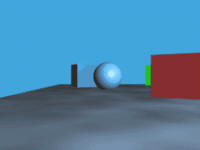

前面介紹過了去年九月份活動頁的 Canvas 刮刮樂、以及照片上傳元件。
這次重頭戲來啦！
登登登！傳說中的～視差動畫！
設定你的視差捲軸動畫

先構思好動畫的進行方式，視差故名思義就是景物因遠近不同造成視線內移動速度的差異，
最常見的例子是在坐車時，距離較近的建築物很快從窗前經過，遠方的山卻看不出來有移動，
因此本文前面展示的範例就是示範如何處理遠、中、近不同距離物體的動畫效果：
三支 Firefox OS 手機從天而降！有沒有一種喜從天降的 fu 啊？
想好動畫的進行方式後，就可以開始製作了，首先當然要先在網頁中放上三個手機圖，
用 CSS 依據遠、中、近的不同設定好大小和位置，
範例中的手機會從畫面外掉進來，所以 top 的啟始值都是負值，
設定好後接下來就可以開始處理 Javascript 的部分，
在看範例之前先簡單介紹函式庫 TweenMax + Superscrollerama：
簡單來說 TweenMax 是一套轉場動畫運算的套件，
只要設定好啟始值和終點值，加上路徑、時間函式，
TweenMax 就會依照目前動畫播放的時間長度比例幫你算好目前的值。
而 Superscrollerama 則是幫你把捲軸位置當作目前播放位置傳遞給 TweenMax。
如此一來就可以在網頁上實作捲軸動畫了。以下是實際範例：
var controller = $.superscrollorama({
playoutAnimations: false
});
var fallHook = $('#fall-hook');
1234
var controller = $.superscrollorama({ playoutAnimations: false }); var fallHook = $('#fall-hook');
第一行的作用是先初始化 superscrollerama 控制器並放在 controller 變數備用，
而 fallHook 則是用來對應捲動進度的元素，你可以把 hook 元素的高度當作時間軸的長度，
一個網頁中可以有多個 hook 來控制不同角色的出場時機和長度，
本範例內容較為簡單，只用了一個 hook，在 CSS 裡可以看到它的高度是 3000px，
在這 3000px 被捲軸捲完之前三支手機掉落的動畫就會結束。
var phone1Fall = TweenMax.to($('#phone1'), 1, {
css: {
top: '450px'
}
});
var phone2Fall = TweenMax.to($('#phone2'), 1, {
css: {
top: '450px'
}
});
var phone3Fall = TweenMax.to($('#phone3'), 1, {
css: {
top: '450px'
}
});
123456789101112131415
var phone1Fall = TweenMax.to($('#phone1'), 1, { css: { top: '450px' } }); var phone2Fall = TweenMax.to($('#phone2'), 1, { css: { top: '450px' } }); var phone3Fall = TweenMax.to($('#phone3'), 1, { css: { top: '450px' } });
這段程式利用 TweenMax.to() 函式設定元素的動畫終點位置，
第一個參數是套用此動畫的元素，例如 #phone1，第二個參數原本是用來指定動畫長度，
但因為動畫的長度已改為由 hook 元素決定，這裡設定為 1 就好，
第三個參數則是指定動畫最終的位置，本範例的手機目標是掉到畫面下方，
fiddle 的高度是 400px左右，所以三支手機最終的 top 都設定為 450px。
重點來了，最後只要把 TweenMax 物件加進 superscrollerama 控制器，
並告訴控制器對應的 hook 元素、動畫的持續時間（捲動長度）和啟始時間（捲軸位置）即可：
controller.addTween(fallHook, phone3Fall, 3000, 0);
controller.addTween(fallHook, phone2Fall, 2100, 500);
controller.addTween(fallHook, phone1Fall, 800, 1000);
123
controller.addTween(fallHook, phone3Fall, 3000, 0); controller.addTween(fallHook, phone2Fall, 2100, 500); controller.addTween(fallHook, phone1Fall, 800, 1000);
controller 的 addTween() 的第一個參數設定 fallHook 為動畫的時間軸，
第二個參數則是把上一段的 TweenMax 物件加進去，告訴控制器終點值為何，
第三和第四個參數則分別是動畫的持續時間和啟始時間，且皆以像素為計算單位。
遠景的手機移動最慢，所以持續時間最長 3000，
而為了讓三支手機能在動畫進行到中間時可以連成一線，
遠景的手機要先進場，進景的手機則要過了 1000px 以後才進場。
才幾行 code，就完成一個捲軸動畫了，是不是比想像中的簡單多了？
實作小白點導覽列
要在捲軸動畫中實作導覽列很容易，
只要把元素安排在目標位置，設定 id 或 name，例：
<div id="anchor2"> ，
運用網頁原本就有的井號頁內連結功能即可：
<a class="nav" href="#anchor2"> ，
但點下去後發現一個問題－動畫畫面很容易整個跑版！
這是因為頁內連結直接跳過中間的捲動過程，
因此很多要在捲動過程中驅動的動畫沒有跑到，
本範例的解決方式是運用一個 JQuery 外掛 localScroll：
$.localScroll({
target: 'body', // could be a selector or a jQuery object too.
queue: true,
duration: 500,
hash: true
});
123456
$.localScroll({ target: 'body', // could be a selector or a jQuery object too. queue: true, duration: 500, hash: true });
加上這段 JQuery 程式後，點下頁內連結就不會直接跳到目的地，
而是會變成流暢的捲動，動畫跟著捲動一起進行，自然就不容易跑版了。
導覽列的另一個問題是，如果想要在捲動到目標時，
讓相對應的導覽列元素亮起來，該怎麼做呢？
這時就要引用一個 JQuery 外掛 waypoints，
它的作用是偵測特定元素在捲動過程中進入畫面的時間點，
透過 waypoint 就可以在捲動至目標元素時，將相對應的導覽列元素亮起來：
var $side_nav = $('#side-nav');
var side_nav_targets = [];
// store possible nav targets in array for easier searching
$side_nav.find('a').each(function (index, anchor) {
side_nav_targets.push(anchor.getAttribute('href'));
});
$('.nav-anchor').waypoint(function (direction) {
$side_nav.find('a').removeClass('curr');
if (direction === 'down') {
$side_nav.find('a[href="#' + $(this).attr('id') + '"]').addClass('curr');
} else {
// find index in nav array of currently scrolled to target
var cur_target_index = $.inArray('#' + $(this).attr('id'), side_nav_targets);
// if there's a previous target, update the active navs
if (cur_target_index > 0) {
$side_nav.find('a[href="' + side_nav_targets[cur_target_index - 1] + '"]').addClass('curr');
}
}
});
12345678910111213141516171819202122
var $side_nav = $('#side-nav'); var side_nav_targets = []; // store possible nav targets in array for easier searching $side_nav.find('a').each(function (index, anchor) { side_nav_targets.push(anchor.getAttribute('href')); }); $('.nav-anchor').waypoint(function (direction) { $side_nav.find('a').removeClass('curr'); if (direction === 'down') { $side_nav.find('a[href="#' + $(this).attr('id') + '"]').addClass('curr'); } else { // find index in nav array of currently scrolled to target var cur_target_index = $.inArray('#' + $(this).attr('id'), side_nav_targets); // if there's a previous target, update the active navs if (cur_target_index > 0) { $side_nav.find('a[href="' + side_nav_targets[cur_target_index - 1] + '"]').addClass('curr'); } } });
One more thing…假掰的模糊效果
如果想做出假掰的淺景深效果，又不會用 photoshop，
可以試著運用一個實驗性的 CSS 屬性：filter
由於此屬性還在 Working Draft 階段，只有較新版本的瀏覽器支援，且寫法尚未統一：
.blur {
-webkit-filter: blur(5px);
filter: url("data:image/svg+xml;utf8,<svg height=\"0\" xmlns=\"http://www.w3.org/2000/svg\"><filter id=\"svgBlur\" name=\"svgBlur\" x=\"-5%\" y=\"-5%\" width=\"110%\" height=\"110%\"><feGaussianBlur in=\"SourceGraphic\" stdDeviation=\"5\"/></filter></svg>#svgBlur");
}
1234
.blur { -webkit-filter: blur(5px); filter: url("data:image/svg+xml;utf8,<svg height=\"0\" xmlns=\"http://www.w3.org/2000/svg\"><filter id=\"svgBlur\" name=\"svgBlur\" x=\"-5%\" y=\"-5%\" width=\"110%\" height=\"110%\"><feGaussianBlur in=\"SourceGraphic\" stdDeviation=\"5\"/></filter></svg>#svgBlur");}
這段 CSS 可以把原本清晰的手機圖變得模糊，
把近景和遠景都變模糊，只留下中距離的物件是清晰的，
看起來就像是淺景深了對吧？